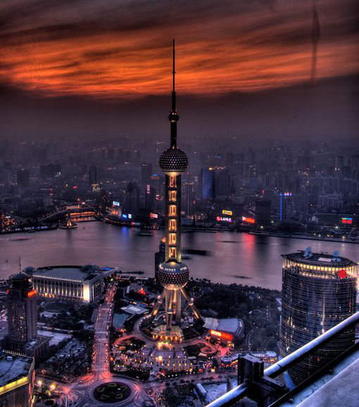

初春上海行
这次的上海行可谓说走就走，虽然行程仓促、时间不长，但收获美景、美食 的同时，也收获了满满的同窗室友情，让平淡的生活幸福满溢...
第一站:
东方明珠塔

东方明珠广播电视塔（The Oriental Pearl Radio & TV Tower）是上海的标志性文化景观之一，位于浦东新区陆家嘴，毗邻黄浦江，与外滩隔江相望，其塔高约468米。该建筑于1991年7月兴建，1995年5月投入使用，承担上海6套无线电视发射业务，地区覆盖半径80公里。
第二站:
上海外滩
外滩（Shanghai the Bund）位于上海市中心黄浦区的黄浦江畔，它曾经是上海十里洋场的风景，周围还有位于黄浦江对岸浦东的东方明珠、正大广场等地标景观。外滩东临黄浦江，南起延安东路，北至苏州河上的外白渡桥，西面是由哥特式、罗马式、巴洛克式、中西合壁式等52幢风格迥异的古典复兴大楼所组成的旧上海时期的金融中心、外贸机构的集中带。
第一站:
东方明珠塔
东方明珠广播电视塔（The Oriental Pearl Radio & TV Tower）是上海的标志性文化景观之一，位于浦东新区陆家嘴，毗邻黄浦江，与外滩隔江相望，其塔高约468米。该建筑于1991年7月兴建，1995年5月投入使用，承担上海6套无线电视发射业务，地区覆盖半径80公里。
这次的旅行增进了我们的友谊。多年以前不知有你，多年以后，愿你我不再分离，珍惜我们的同窗情谊，珍惜我们的友情...